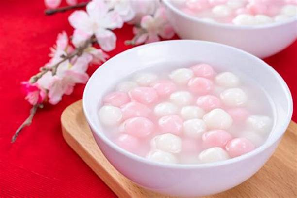

ENTRADA
GYOZAS

son unas empanadillas japonesas parecidas a las famosas empanadillas chinas. Pueden llevar relleno de carne o de verduras
ROLLITOS PRIMAVERA

imposible resistirse a un rollito de primavera con ese relleno jugoso con verduras y carne picada, y su exterior crujiente.
CHANCHO

La carne de cerdo asada en finas láminas
PLATO
CERDO AGRIDULCE

pollo al vapór con hiervas y salsa agridulce.
POLLO KUNG PAO
pollo frito sasonado y salteado con verduras
WONTONS

zopa de finas hierbas acompañado de gyozas
POSTRES
PASTEL DE LUNA
delicioso pastel relleno de chocolade,vainilla en forma de luna.
TANGYUAN
sopa de caramelos rellenos.
TOM YUEN
crema deliciosa de pasabocas
BEBIDAS
BAIJIU

tequila japones elaborados de los mejores hiervas y fermentado
WHISKY CON TE VERDE
tequila 100% puro en medio baso de te verde relajante.
TE CON LECHE Y TAPIOCA
delicioso te con leche con huvas pasas y crema batida